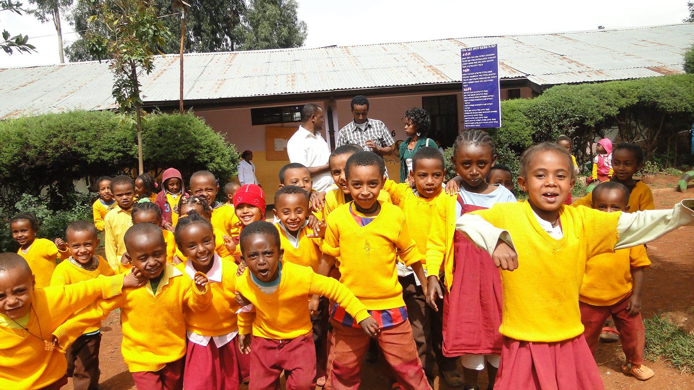
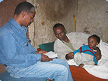
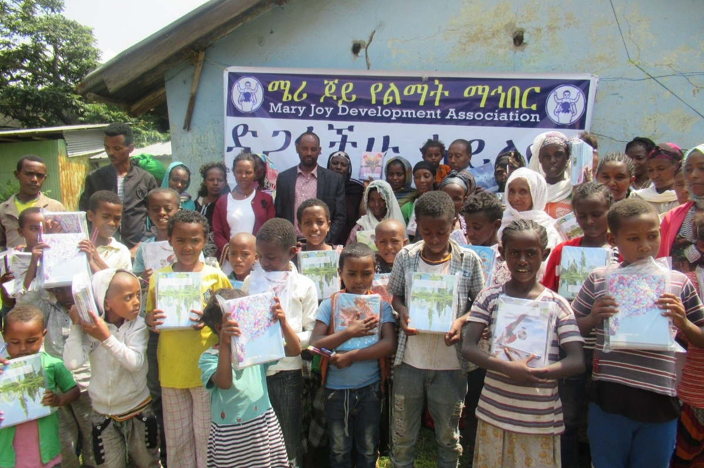
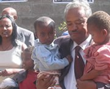
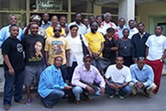
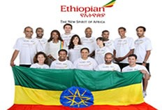
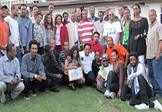

Livelihood
Livelihood Enhancement: the program focused on improving the socio-economic conditions of vulnerable groups in the target area.
The program aimed to bring this change via primary health care services,primary education services and economic empowerment.
Economic Empowerment

Involves in provision of vocational skill training, Income Generating Schemes, Training on Basic Business Skills,promote working culture.
Primary Health Care Services

Iincludes Information, Education and Communication [IEC],Integrated Management of Childhood Illnesses (IMCI), Reproductive health service [RH],
Environmental Health and personal hygiene, Basic curative health service.
Providing Primary Education

Services like expansion of schools, construction of new libraries, kindergartens and primary schools, tutorial class and non
formal education,provision of scholastic materials and school fees to orphan and vulnerable children.
HIV/AIDS
HIV/AIDS Prevention, Care and Support
MJDA works towards preventing the spread of HIV/AIDS, mitigating and alleviating the impacts of HIV/AIDS on
the target communities with special focus on infected and affected members of the community both through service delivery and advocacy work.
HIV&AIDS Prevention
In order to curb the transmission and spread of HIV accordingly to the aforementioned definition, MJDA counts with hundreds of volunteers as celebrities
from the sport, media, entertainment, culture and fashion sector, community volunteers from Idders, School Clubs and Community Associations,specialist
professionals, consultants and internship students among others.irus one of the program under implementation by Mary Joy is prevention.This prevention
program includes Information Education and Communication / Behavior Change Communication [IEC/BCC], Voluntary Counseling and testing[VCT], Prevention
of Mother to Child Transmission [PMTCT], Condom Promotion and distribution, sexually transmitted infection/STI/ management, organizing and strengthening
Anti-AIDS Clubs.
Preparing Families for Transition

In order to succeed the family heritage and history, Mary Joy works with respective family members the arrangement of succession
planning, memory book preparation, will make…etc.
Extending Parent Child Relationship

So as to improve the quality of life of the People living With HIV&AIDS, Mary Joy provides Home Based Care Service, Nutritional and Psycho-Social
support;create access to ARV, Promotion of Positive living, treatment of Opportunistic infectistyle ons, monthly allowance for bedridden patients.
Ensuring Children's Future

Inrder to enable vulnerable children to lead a better life in future, such services are being given by Mary Joy: nutritional and
Psycho-social support, personal development and life skill training, monthly cash transfer, provision of casual cloth,Ensuring Children's Future: In
order to enable vulnerable children to lead a better life in future, such services are being given by Mary Joy: Nutritional and Psycho-social support
personal development and life skill training, monthly cash transfer, provision of casual cloth.
Capacity Building
This Program aims to build the institutional capacity of MJDA, CBOs and target communities for the effective implementation of the mission of the
organization.
Institutional Capacity Building

MJDA, as non-for-profit organization, that works passionately and commits itself for the achievement of its mission, recognizes
the importance of Organizational capacity Building. MJDA therefore defined Capacity Building as strategy and tool to enable the organization to cope
up with dynamics of development and catch up the changing world as well as to bring the organization in the frontline of civil society.
Capacity Building for CBOs and Target Communities

Mary Joy essentially valued community participation as one of bridge stone for stainability and ownership. The program therefore designs different
capacity building activities such as trainings, financial and material support for Income Generating Activities and technical support in the design,
implementation, monitoring and evaluation of development projects.
Private Community Public Partnership (PCPP)
Private-Public-Partnership

MJ-DA has designed strategies to ensure institutional sustainability and program continuity through enhancing the culture of giving and volunteering
among various groups of people locally and internationally. MJ -DA promote this program through Sensitized different community groups for local
resource mobilization through seminar, workshop, panel discussion, forum, organizing different events, Lobbing universities, college, vocational
schools and other institutions, companies for free scholarship, job placement and membership package. Above and beyond Local resource mobilization,
through family sponsorship is the major focus of the organization to ensure sustainability and ownership of the program ensure institutional
sustainability and program continuity through enhancing the culture of giving, and upholding local and international resource mobilization.
Volunteerism



MJDA has adopted the following definition for Volunteerism
Accordingly to the aforementioned definition, MJDA counts with hundreds of volunteers as celebrities from the sport,
media, entertainment, culture and fashion sector, community volunteers from Idders, School Clubs and Community Associations, specialist professionals, consultants and
internship students among others.